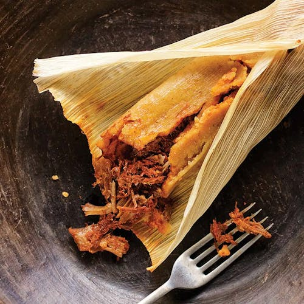

Pork Tamales
Home

Description
Pork tamales are a mexican staple that is extremelely
delicious and filling. A couple tamales and a coke served
in a glass is all you need to make you feel ready for
hibernation.
Ingredients
- 1/4 cup all-purpose flour
- 1 cup of Milk
- 3 large eggs
- 1 tbsp white sugar
- 1 tsp vanilla extract
- 1/2 tsp ground cinnamon
- 1 pinch of salt
- 12 thick slices of bread
Steps
- Gather all ingredients.
- Measure flour into a large mixing bowl. Slowly whisk in milk.
Whisk in eggs, sugar, vanilla extract, cinnamon, and salt until
smooth.
- Heat a lightly oiled griddle or frying pan over medium heat.
Meanwhile, soak bread slices in milk mixture until saturated..
- Working in batches, cook bread on the preheated griddle or pan until
golden brown on each side.
-
Serve hot and enjoy.